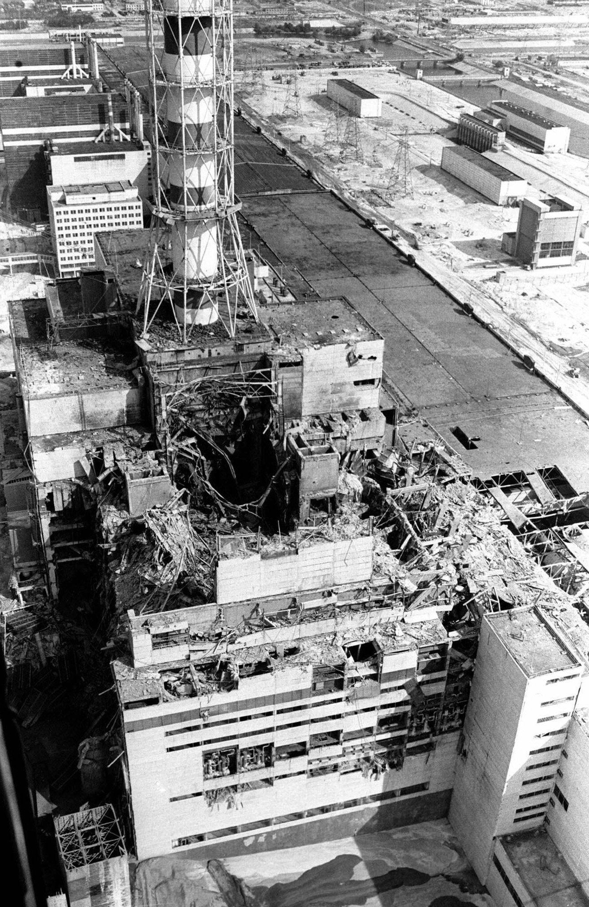
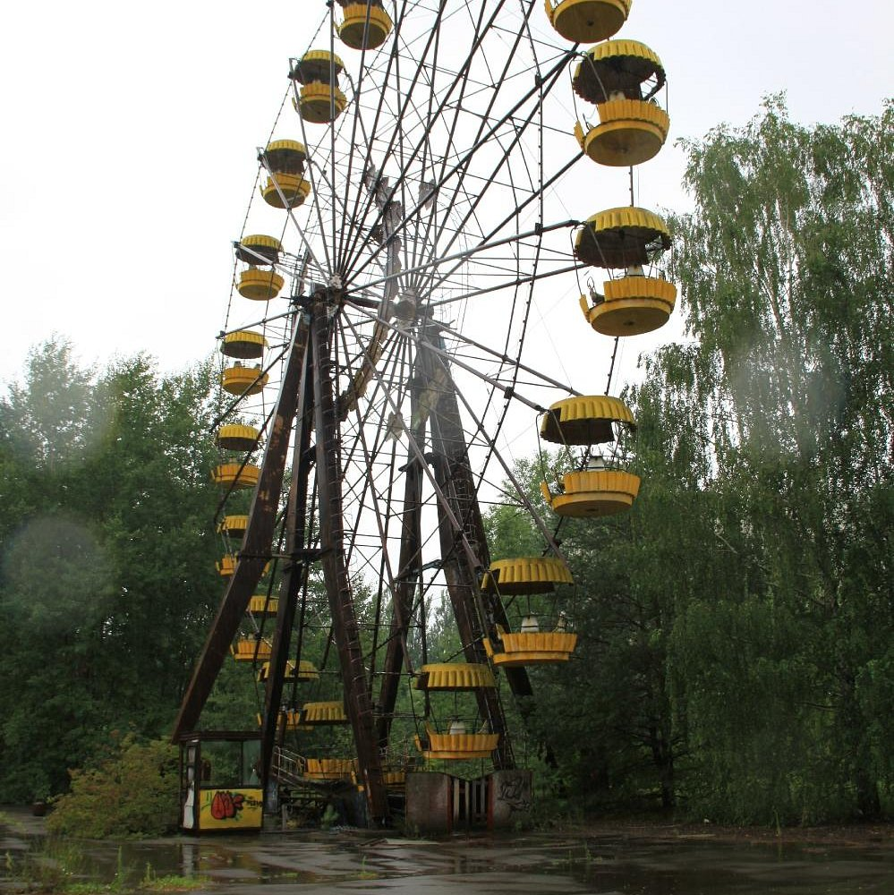
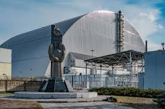

Чорнобиль: трагедія, що змінила світ
Чорнобильська катастрофа, що сталася 26 квітня 1986 року, є однією з наймасштабніших техногенних аварій в історії людства. Вибух на четвертому енергоблоці Чорнобильської АЕС спричинив викид величезної кількості радіоактивних речовин, що забруднили значні території України, Білорусі та інших країн Європи. Наслідки аварії вплинули на життя тисяч людей, змусивши їх залишити свої домівки. Сьогодні Чорнобильська зона відчуження є нагадуванням про небезпеку ядерної енергетики та місцем наукових досліджень і туристичних відвідувань.
1. Причини та хід катастрофи
Аварія на Чорнобильській АЕС сталася під час планового тестування реактора. Через помилки персоналу та конструктивні недоліки реактор вийшов з-під контролю, що призвело до потужного вибуху. У результаті зруйнувався четвертий енергоблок, і в атмосферу потрапила велика кількість радіоактивних речовин.
2. Наслідки для природи та людей
Катастрофа спричинила серйозні екологічні проблеми: тисячіквадратних кілометрів землі були забруднені радіацією, а багато міст і сіл стали непридатними для життя. Близько 200 тисяч людей змушені були залишити свої домівки. Радіаційне опромінення призвело до зростання кількості онкологічних захворювань та інших проблем зі здоров’ям.
3. Чорнобиль сьогодні
Сьогодні Чорнобильська зона є місцем наукових досліджень, а також туристичною локацією. Природа частково відновилася, а деякі види тварин почали розмножуватися в зоні відчуження. Незважаючи на це, рівень радіації в деяких місцях залишається небезпечним, і повернення людей до постійного життя тут неможливе.
